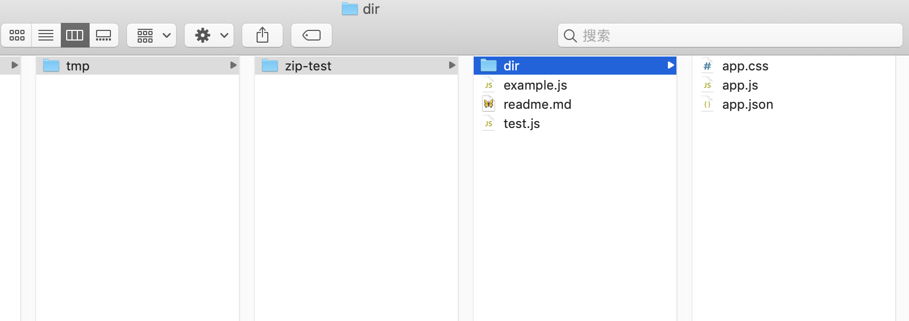
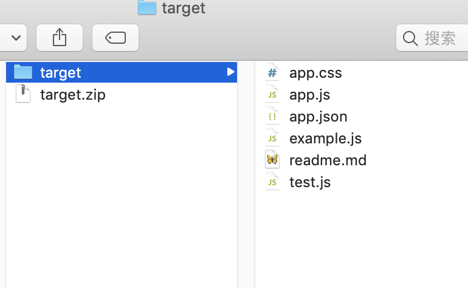

zip
zip 命令格式
zip [--options] target.zip your_file_dir
其中常用的参数有：
-r: 递归的压缩所有子目录
-X: 排除隐藏文件，比如.DS_Store
-q: 不输出log
-j: 去掉递归目录名称/usr/local/bin这种格式，全部打平到一个目录
$ zip -r ~/workspace/tmp/target.zip ~/workspace/tmp/zip-test/

$ zip -rj ~/workspace/tmp/target.zip ~/workspace/tmp/zip-test/

可以看出来，加上-j参数后，所有的目录都被去掉了，所有的文件都平铺在根目录下。
这样不太好，所以一般会先cd进入某个目录，再执行zip path/to/target.zip *生成压缩zip文件。